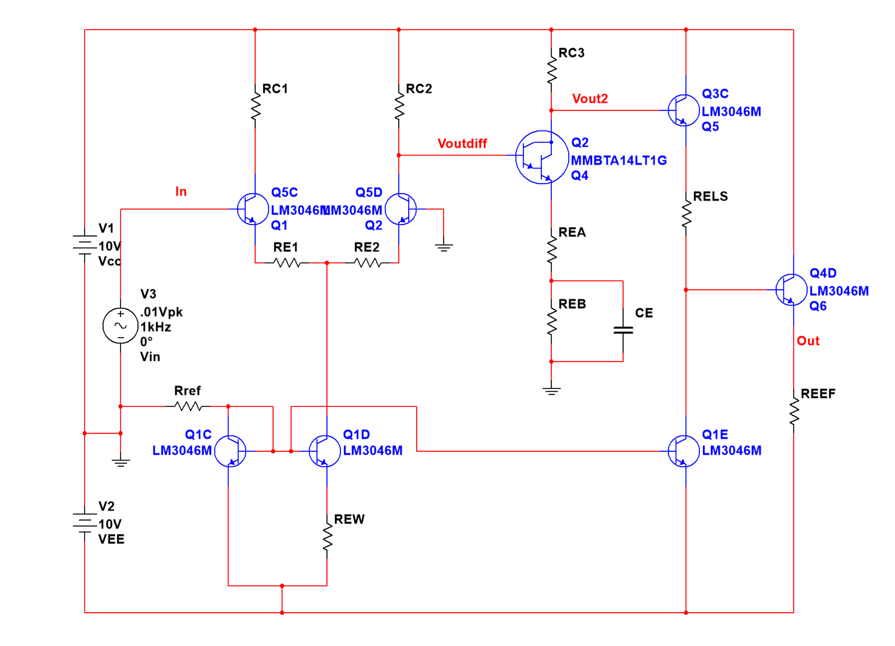
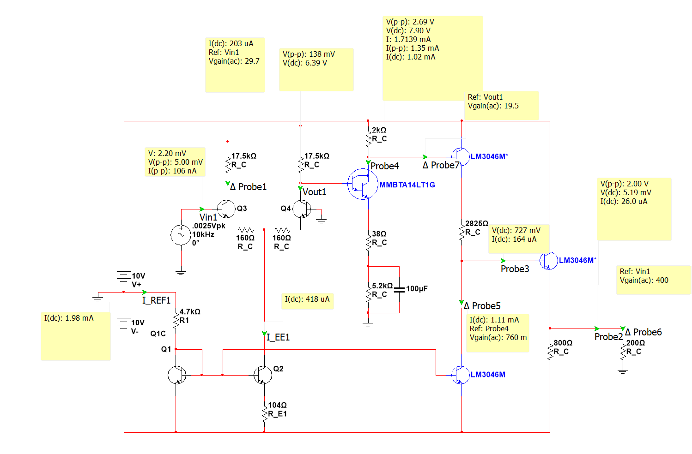
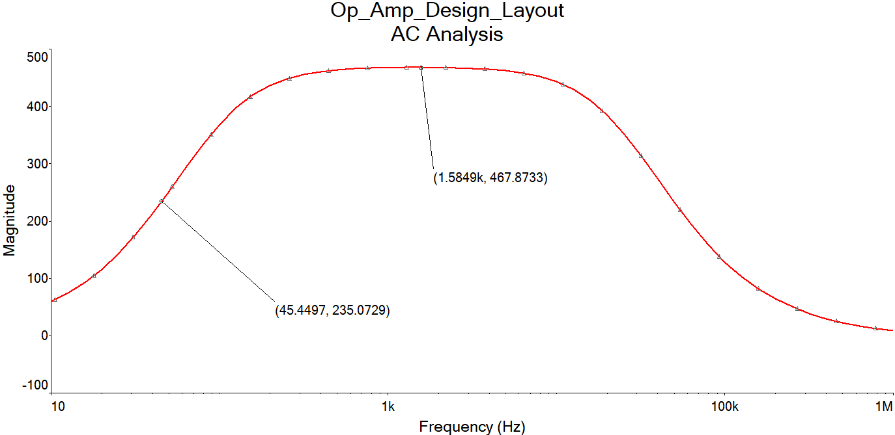
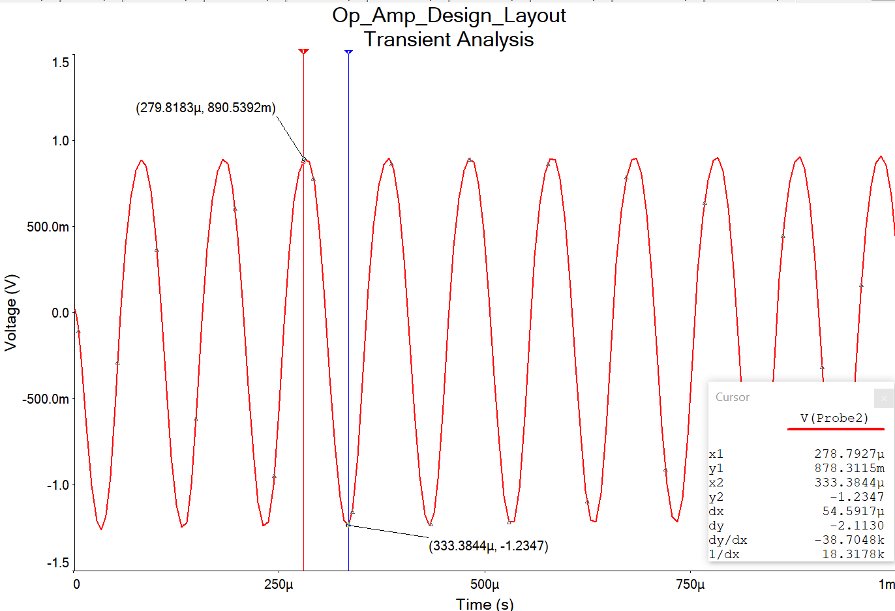
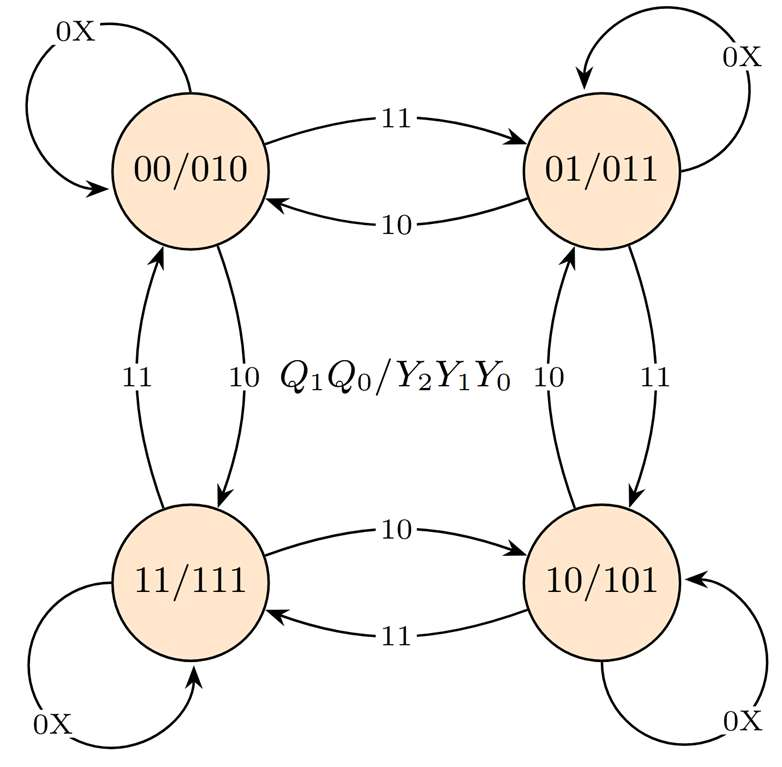
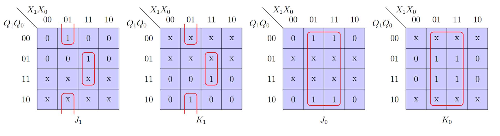
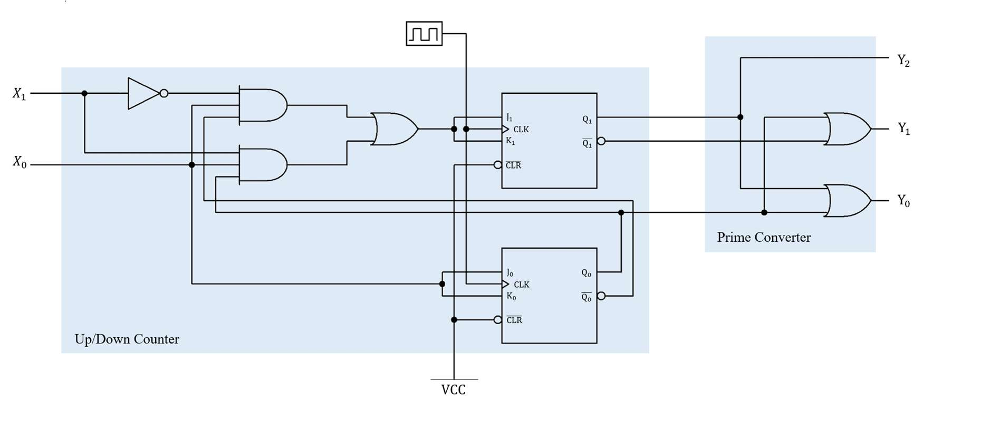
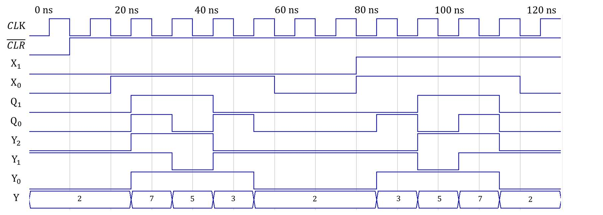

Overview
Two semesters of Electrical Engineering Junior Lab covering hands-on analog and digital circuit design, simulation, breadboard fabrication, and testing. The coursework progressed from transistor-level amplifier design to sequential logic circuits, building core skills in both domains.
Operational Amplifier Design
Designed and simulated a two-stage operational amplifier from discrete transistors, meeting strict specifications for gain, impedance, bandwidth, and output swing. The amplifier architecture comprised four cascaded stages:
- Differential amplifier input stage: A matched transistor pair (LM3046M) biased by a Widlar current source at ~200 μA per side. Provided high input impedance (Rid = 58.6 kΩ, spec ≥ 20 kΩ) and common-mode rejection, with 160 Ω emitter degeneration resistors for gain stability.
- Common-emitter gain stage: A Darlington-pair CE amplifier (MMBTA14LT1G) providing the bulk of the voltage gain. A bypass capacitor (100 μF) on the emitter degeneration resistor set the low-frequency cutoff at ~45 Hz (spec ≤ 100 Hz).
- Level shifter: Translated the DC operating point to center the output at 0 V offset (< 10 mV measured), using a 3.3 kΩ emitter resistor to drop the 6.6 V difference between stages.
- Emitter-follower output stage: Provided low output impedance (Ro < 200 Ω) and unity voltage gain for driving a 200 Ω load.
The simulated midband gain was 467.87 V/V (spec: 400–500), with a peak-to-peak output swing of 2.1 V (spec ≥ 2 V).

Op-amp circuit schematic — differential pair, Darlington CE stage, level shifter, and emitter follower

LTSpice simulation with DC operating point annotations at each stage

AC frequency response — midband gain of 467.87 V/V, low-frequency cutoff at 45 Hz

Transient response — 2.1 V peak-to-peak output swing without clipping
Prime Number Counter
Designed and implemented a three-bit synchronous up/down prime number counter using a Moore-model sequential circuit. The counter cycles through the primes {2, 3, 5, 7} in ascending or descending order, controlled by an enable input (X0) and a direction input (X1):
- State machine design: Four states stored in two JK flip-flops (Q1, Q0), with state transitions derived from a state diagram mapping each state to a prime number. Excitation logic was minimized using Karnaugh maps.
- Output combinational logic: A separate module converts the 2-bit state into a 3-bit binary representation of the corresponding prime (e.g., state 00 → 010 = 2, state 01 → 011 = 3).
- VHDL simulation: The design was verified in VHDL before hardware implementation, with a testbench confirming correct counting in both directions, proper enable/disable behavior, and accurate prime output encoding.
- Hardware implementation: Built on a breadboard using 74LS32 OR gates, 74LS04 inverters, 74LS11 3-input AND gates, and 7473 JK flip-flops, clocked by a 1 Hz square wave from a Tektronix oscilloscope function generator.

State diagram — four states cycling through primes {2, 3, 5, 7} with up/down transitions

Karnaugh maps for JK flip-flop excitation logic — minimized to derive gate equations

Complete logic diagram — up/down counter module with JK flip-flops and prime converter output

VHDL timing diagram — correct prime sequence with up/down and enable control verified